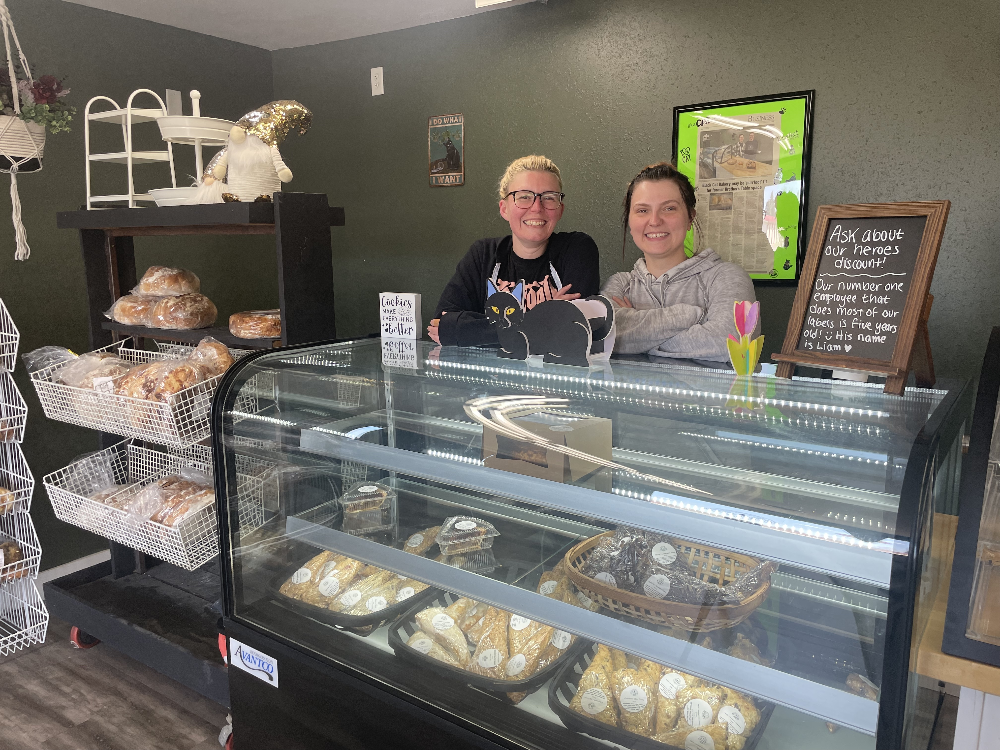

Traverse Bay Farms is among the small retail business stores in rural areas that are flourishing, even as similar stores struggle in more populated areas. Photo courtesy of Traverse Bay Farms
At Traverse Bay Farms near the shore of Lake Michigan, where visitors can try the region’s famous tart cherries in treats from juice to salsa, the pandemic cherry-picked a new type of customer.
More remote workers moved to rural Michigan, where Andy LaPointe runs his two mom-and-pop shops in Bellaire and Elk Rapids, villages with populations just above 1,000. With new neighbors eager to experience the local sights and flavors, LaPointe was ready with award-winning local flavors and printed guides to give newcomers the inside scoop on what to do in the area.
“When they moved from the urban or the suburban areas to the rural areas, they wanted to truly experience the rural lifestyle and patronize the local companies and the local businesses like ours,” LaPointe said.
LaPointe’s business is thriving as rural America has become a bright spot for small retail. Bucking a nationwide trend, the number of retailers with 20 or fewer employees grew by 2 percent in rural counties, those with populations fewer than 5,000, in 2022, according to Census data. Nationwide, there was a nearly 4% decrease in the little stores that include fruit stands, children’s clothing stores, and businesses that sell products online directly to consumers.
This follows a boom in small retail businesses in the first two years of the pandemic. With people stuck at home, reevaluating their priorities and flush with stimulus money, many started their own ventures.
The new entrepreneurs were aided by technology that could handle everything from accounting to inventory, advances in AI that helped with marketing, and social media to connect with customers.
Even Amazon helped because these new retailers could sell their goods on the platform and have immediate access to a worldwide market, although the online behemoth also presented competition and price pressures.
Now those heady days appear to be over in urban and suburban areas. Those mom-and-pop shops are clobbered with challenges from securing startup funding to competition from big-box and online retailers.
But in rural counties, small retailers benefited from migration trends, a shift to online sales that opened up new markets, and local economic development that has built up the main streets of small towns.
“I see a lot of these types of businesses setting up shop or staying in business in the most rural areas,” said Luke Greiner, an analyst at the Minnesota Department of Employment and Economic Development. “They've figured out the formula of how to serve that population.”
While conditions during the pandemic encouraged many people to become entrepreneurs, the idea was not new in rural America.
“There is an ethos around entrepreneurship in small towns,” said Kim Skobba, a professor at the University of Georgia who studies economic development in rural areas.
Rural areas have long had a slightly higher rate of self-employment than in big cities, said Becky McCray, a rural expert and publisher of smallbizsurvival.com, who explained that it likely stems from the area’s agricultural heritage.
“If you're a farmer and you're figuring out ways to make things work, then over the decades this translates into, I will figure out a way to make my life work,” she explained.
The pandemic brought new customers to rural areas, as people could work remotely and wanted a different lifestyle. At the same time, the shutdowns forced many of those rural businesses to find new ways to reach customers, from curbside pickup to online stores.
“There's no doubt in my mind that the pandemic reshaped their market area,” said Greiner. “So maybe they’re still a really small retailer. But instead of serving just a county's worth of residences, they start selling online. And all of a sudden, they're in the global marketplace.”
McCray – who lives in Hopeton, Oklahoma, population 30 – has run a survey of small rural businesses for 10 years. It has revealed that these entrepreneurs are finding new ways to reach customers, from online shops to influencer-style tactics. “We know that innovation is out there.”
Many rural communities consider their downtown areas to be a source of economic development and focus on building a charming main street, Skobba said, which includes attracting the local retail stores that line it.
In more populated areas, the lack of capital funding – a persistent challenge for small businesses – has taken a toll. Most pandemic-era assistance programs, from the federal government’s Paycheck Protection Program (PPP) to a $500 matching grant offered by GoFundMe, had ended by 2022.
“I think the pandemic certainly provided a bit of a false reality … to these business flush of funding that was being released from corporations, from government,” said Ibrahima Souare, executive director of the New York Professional Advisors for Community Entrepreneurs (NYPACE). “But then once those things began to dry up, that's when the reality set in.”
Maggie Thoemke and Morgan Laite felt the struggle of finding startup funding to take their company, Black Cat Bakery, out of their homes and into a brick-and-mortar store in suburban Moorhead, Minnesota. After three banks turned them down, they decided to put their dreams on the back burner and both got full-time jobs to help support their families.
But then they met someone who had a connection at a local credit union who wanted to support small businesses. With the money in hand, they quickly opened and proceeded to sell out every item, every single day of their first week.
“What was waiting for us was a community that was starving for a bakery,” Thoemke said.
Maggie Thoemke and Morgan Laite opened Black Cat Bakery in Moorhead, Minn., in December 2023. Photo credit: Coralie Carlson
Although women and minorities are the fastest-growing demographics of entrepreneurs, Souare said they are also hit the hardest by the lack of capital funding. Women receive only 2% of venture startup capital, and Black entrepreneurs 1%.
Competition from big-box stores such as Walmart, which has grown steadily since the pandemic, and Amazon have also affected urban and suburban retailers more than rural ones.
“People living in urban and suburban areas may have gotten used to the convenience of online shopping,” said Brandon Hartman, who has 15 years of experience in eCommerce and founded an online store selling RV equipment. “With big box stores being so accessible in these areas, it's easier for delivery drivers to deliver goods quickly.”
In northern Michigan, LaPointe, a former stockbroker who launched his own business after the 9/11 terrorist attacks prompted some self-reflection, has turned his rural location into his company’s niche.
He offers his guides of in-the-know sights and outings to anyone who walks in his stores, and decorates the sales floor with local memorabilia, from a totem pole to a toy train set that represents the region.
Once his customers get a taste for tart cherries, LaPointe turns them into online customers at his website, which produces the majority of his sales. Even then, he keeps the personal touch with hand-written thank you notes delivered among the cherry-inspired food.
He said he creates a bond with customers that keeps them coming back.
“When you have something unique, something that's true to you,” LaPointe said, “you have to tell that story and create that special bond with the customer.”